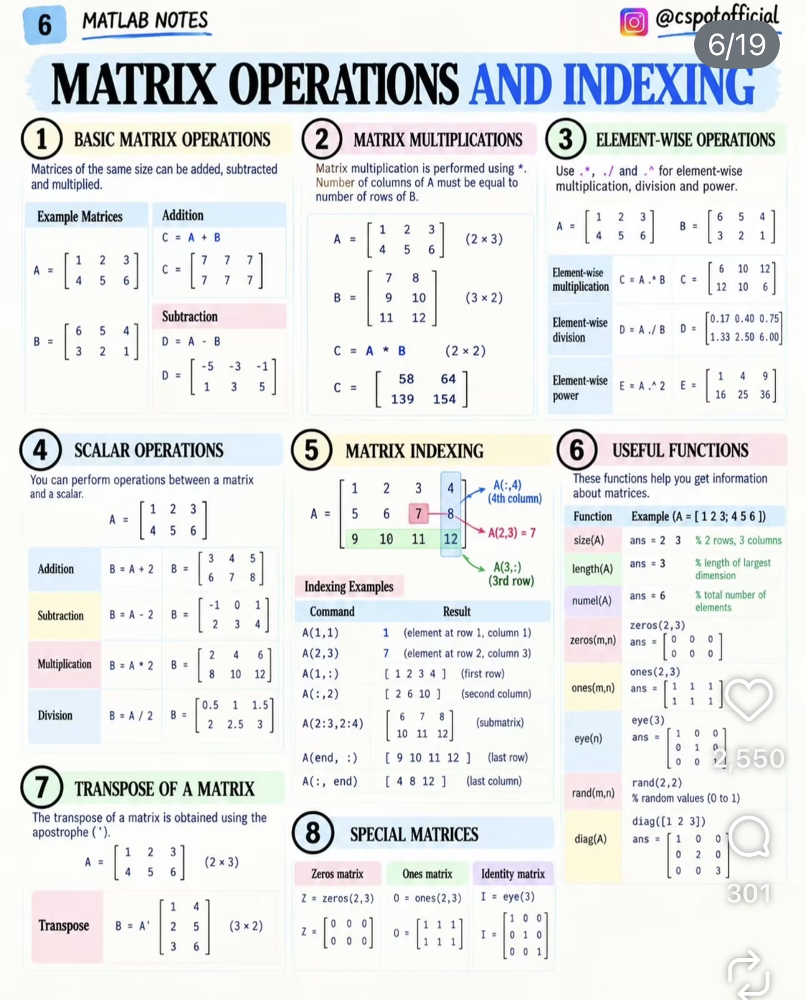
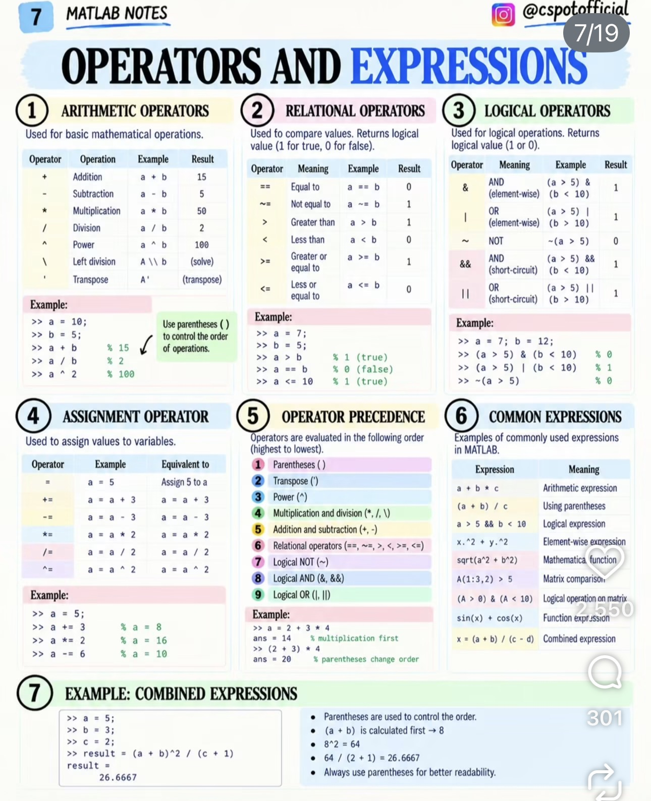
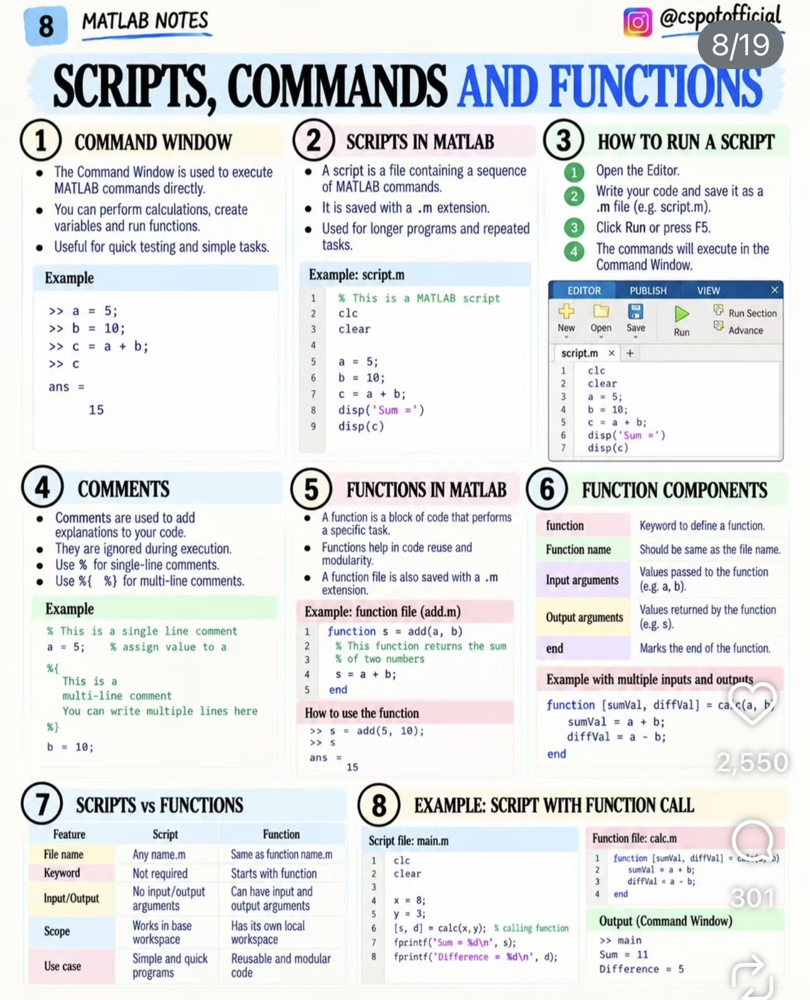
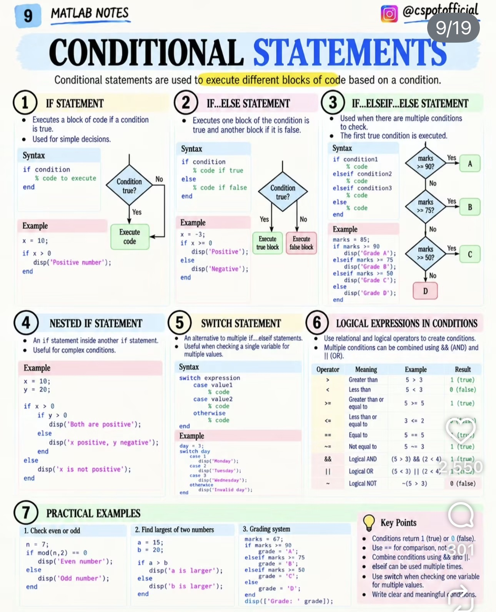
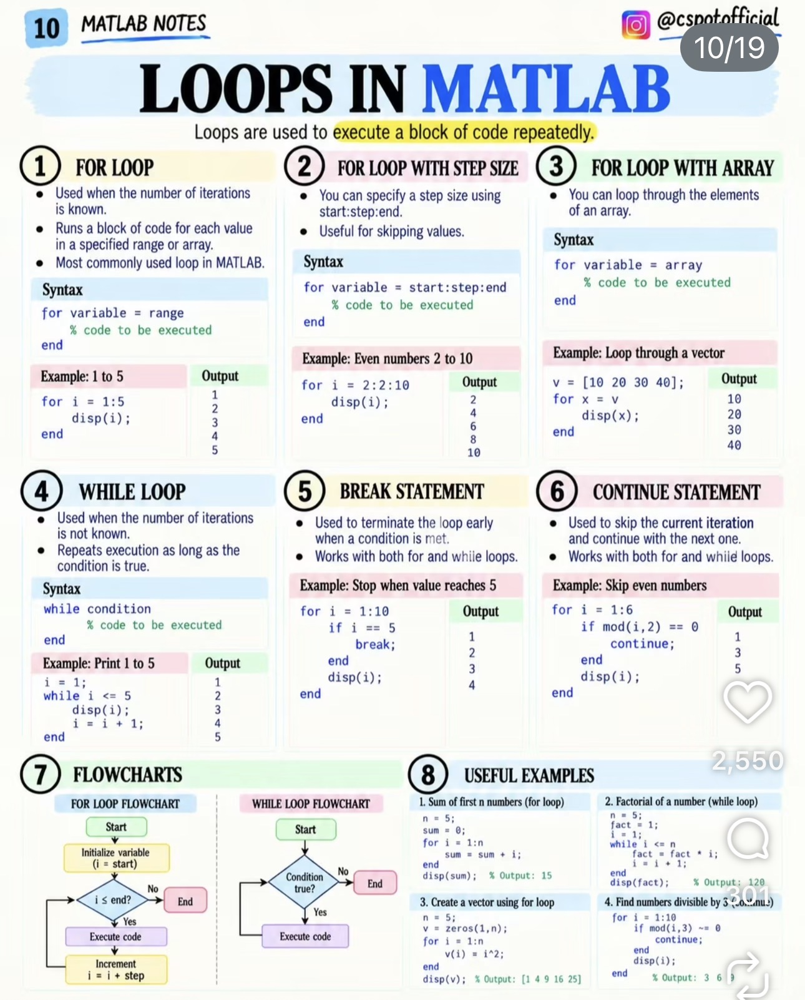
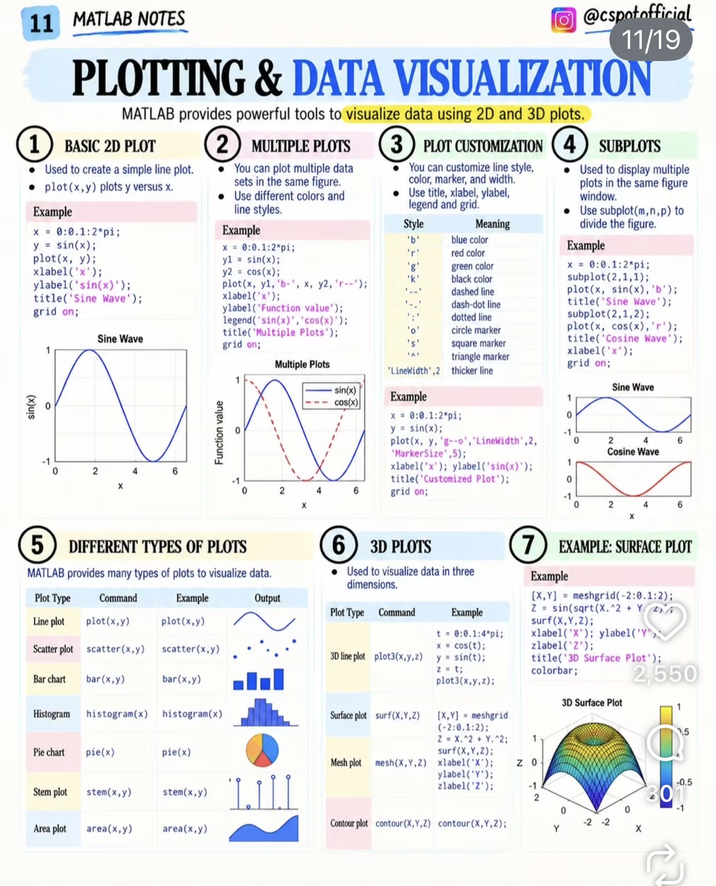
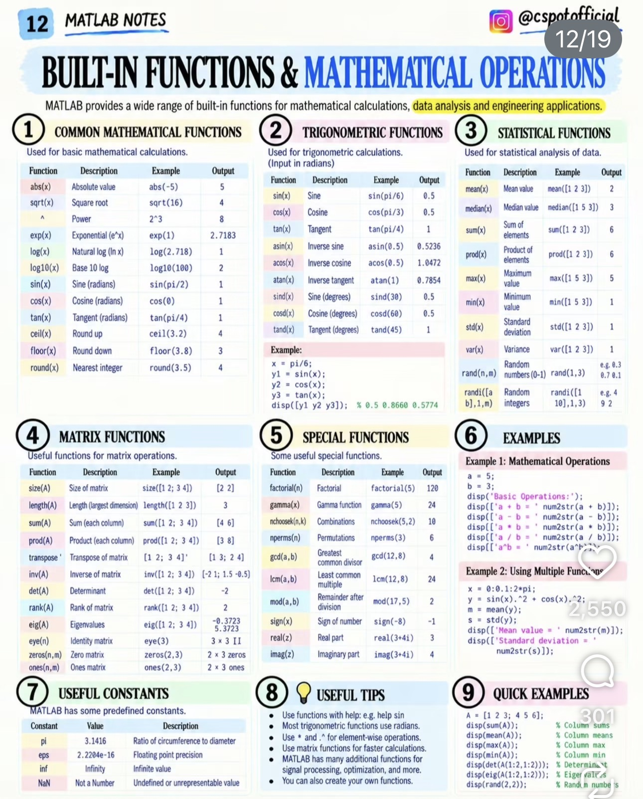
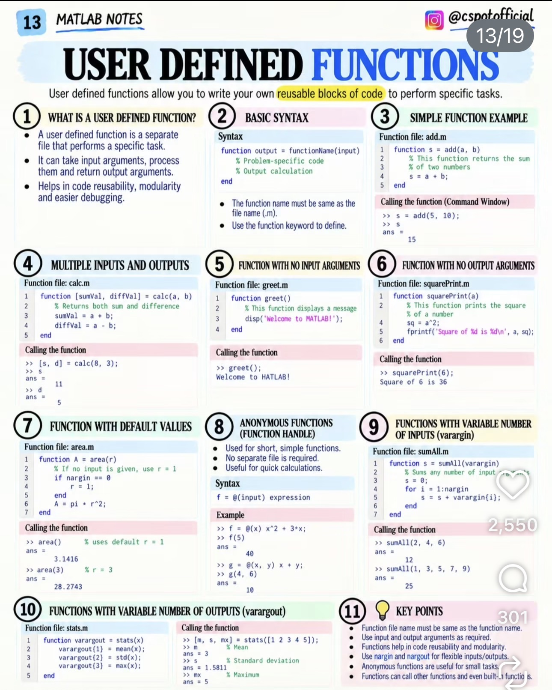
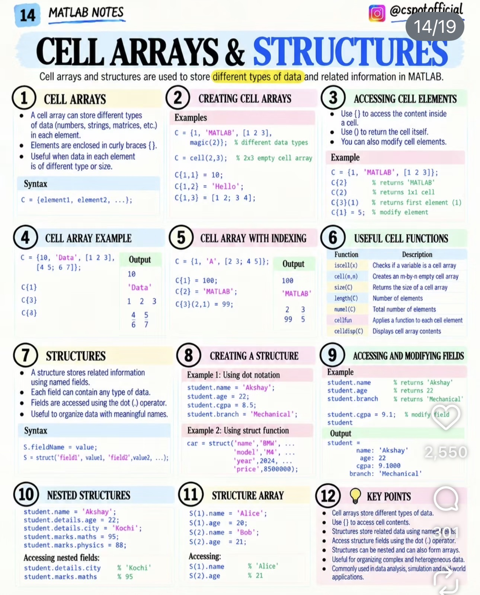
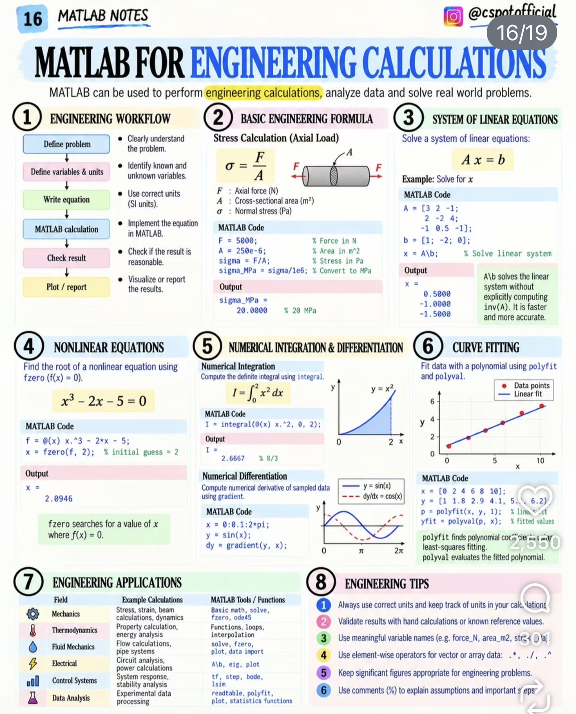

Your study dashboard
Progress is saved only in this browser. For privacy, don't upload identifiable exam photos to a public repository.
Ready to practice?
Study tip: read the explanation, then retry without looking. Two correct answers in a row = mastered.
🎧 Narrated visual mini-lessons
Pick a topic, play the voice explanation, and advance through the solution at your own pace. Audio uses your browser’s speech engine.
🌈 Visual MATLAB Notes
Inspired by your notebook references: small chunks, color-coded concepts, examples, and exam reminders.
🔁 FOR vs WHILE
FOR: Known number of repetitions.
for i = 1:5 disp(i) end
WHILE: Repeat while a condition stays true.
while x < 10 x = x + 1; end
🔀 IF vs SWITCH
IF: Ranges and comparisons.
if x > 5
disp('high')
else
disp('low')
endSWITCH: Match exact values.
switch grade
case 'A'
disp('Great')
otherwise
disp('Try again')
end🧩 Inputs → Outputs
function y = squareIt(x) y = x^2; end
Remember: A function has its own workspace. MATLAB indexing starts at 1.
Shortcut: A\b solves a linear system without explicitly finding an inverse.
Follow the program visually
⭐ Exam focus: Write down the variable value after every iteration. For while, check which variable actually changes; otherwise the loop may never stop.
Expanded visual reference library
Choose a topic to open its quick reference. Original reference images are included below each summary. Some source examples contain errors; use the corrected notes.
Matrix operations & indexing
A = [1 2 3; 4 5 6; 7 8 9];
A(2,3) = 6 • A(:,2) = [2;5;8] • A(5) = 5
Rows first, columns second. Linear indexing goes down columns. Same size is sufficient for element-wise multiplication, not matrix multiplication.
Open original reference at full size
Operators & expressions
a = 5; a = a + 3;
a == 8 → true; mod(8,3) → 2
MATLAB does not support +=, -=, *=, /= or ^=. The source combined expression (5+3)^2/(2+1) equals 21.3333, not 26.6667.
Open original reference at full size
Scripts, commands & functions
function s = add(a,b)
s = a+b;
endadd(5,10) → 15
Scripts share the current workspace; functions have their own workspace. A primary function file should match its function name.
Open original reference at full size
Conditional statements
if mod(n,2) == 0
disp("Even")
else
disp("Odd")
endCondition → true branch OR false branch
Use == for comparison, = for assignment. elseif checks only if previous conditions were false.
Open original reference at full size
Loops
total = 0;
for i = 2:2:10
total = total+i;
end2 → 6 → 12 → 20 → 30
Use for when repetitions are known; while when a condition controls stopping. break exits; continue skips an iteration.
Open original reference at full size
Plotting & visualization
x = 0:0.1:2*pi; plot(x,sin(x)); grid on
x → sin(x) → plot
Use scatter for individual points, plot for connected lines. subplot(m,n,p) selects a panel.
Open original reference at full size
Built-in functions
factorial(5) sind(30) mod(17,5)
120 • 0.5 • 2
sin uses radians; sind uses degrees. length is largest dimension, numel counts all elements. MATLAB has no standard nperms function; use factorial(n) for n distinct objects.
Open original reference at full size
User-defined functions
f = @(x) x.^2 + 3*x; f(5)
25 + 15 = 40
Anonymous functions are useful for fzero and integral. Multiple outputs use square brackets.
Open original reference at full size
Cell arrays & structures
C = {10, 'Data', [1 2 3]};
C{3}
student.age = 22;[1 2 3] • 22
Curly braces extract cell contents; parentheses return cells. Dot notation accesses named structure fields. length is largest dimension, not total cells.
Open original reference at full size
Engineering calculations
f = @(x) x.^2; integral(f,0,2)
8/3 ≈ 2.6667
Use A\b for linear systems, fzero for roots, gradient for sampled derivatives, polyfit/polyval for fitting. The source linear-system example actually gives [1; -2; -2].
Open original reference at full size
💻 MATLAB Code Lab
Write code, press Run practice code, and see the output. Try loops, simple conditions, variables, and disp().
trapz examples should be tested there.Supported practice syntax and limitations
Supports scalar assignments, arithmetic, for, while, if/else/end, and disp(), using a math expression engine. Stops runaway loops. Not supported: MATLAB function files, switch, fprintf, full array indexing, and many MATLAB built-ins. MATLAB and this practice runner can behave differently.
🧠 Smart MATLAB Coding Coach
Choose a challenge, write your own MATLAB-like code, and check it against several test cases. Get a targeted hint, a simple explanation, and a model solution when you need one.
Test results & feedback
Quick formula library
Trapezoidal rule
$$T=(b-a)\frac{f(a)+f(b)}2$$
$$h=\frac{b-a}{n},\qquad T_n=\frac h2\left[f(x_0)+2\sum_{i=1}^{n-1}f(x_i)+f(x_n)\right]$$
Bisection
$$x_m=\frac{x_l+x_u}{2}$$
Keep the half interval where the endpoint function values have opposite signs. Repeat until the specified stopping criterion is met.
MATLAB quick syntax
|| logical OR (scalars) && logical AND (scalars) == equal comparison A(row,column) A\\b solve A*x=b rand uniform random numbers randn normal random numbers
Relative errors
$$\varepsilon_t=\left|\frac{\text{true}-\text{approx}}{\text{true}}\right|\times100\%$$
$$\varepsilon_a=\left|\frac{\text{current}-\text{previous}}{\text{current}}\right|\times100\%$$
Add your own practice question
Custom questions are stored in this browser. Use the JSON export to back them up.